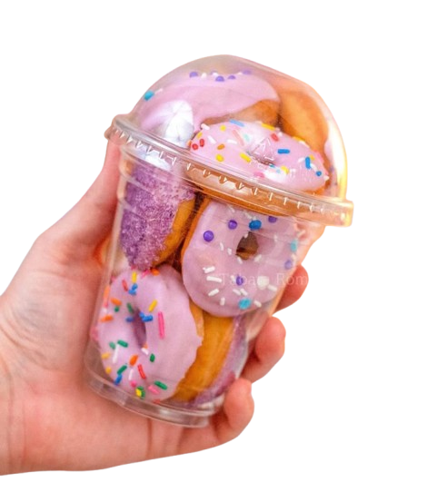
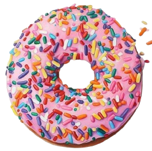
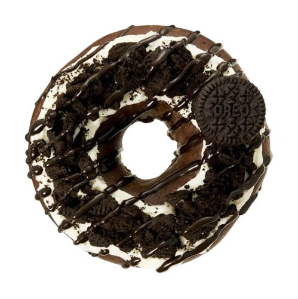

Mini Donuts no Copo
Imagine um copo decorado com uma variedade de donuts coloridos e tentadores, cuidadosamente arrumados. O copo é feito de plástico resistente, com um design moderno e transparente, para destacar a beleza das delícias que ele contém. Dentro do copo, os donuts são variados em forma e sabor: há donuts radicionais com glacê de chocolate, outros com cobertura de frutas vermelhas, e alguns com granulado colorido ou até mesmo recheados com cremes irresistíveis.
R$19,90

Donuts Classico
O donut clássico é a escolha perfeita para quem aprecia um sabor tradicional e irresistível.Ele possui uma massa macia e leve, levemente dourada por fora, com um toque suave e aerado no interior. A cobertura é um simples glacê rosa , cremoso e doce, que brilha sob a luz,dando-lhe um acabamento perfeito junto com granulados coloridos.
R$5,00

Donuts Oreo
O donut de Oreo é a escolha ideal para quem ama a combinação de chocolate e creme de forma deliciosa e irresistível. Este donut apresenta uma massa fofinha e suave, levemente dourada por fora, com uma textura macia e perfeita por dentro. Sua cobertura é uma camada generosa de glacê de chocolate preto, que brilha com um toque de cremosidade e sabor intenso. Para completar, pedaços crocantes de biscoito Oreo são espalhados sobre o donut, proporcionando um contraste perfeito entre a suavidade da massa e o crocante dos biscoitos.
R$6,00

Monte o seu donuts do jeito que você quiser !!!